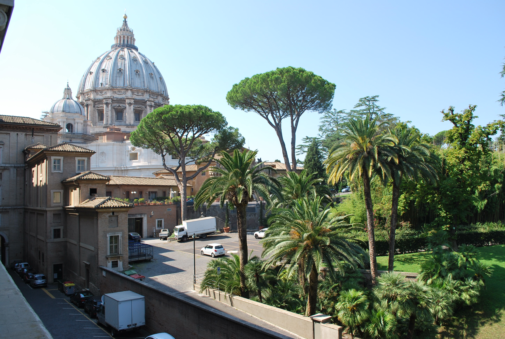
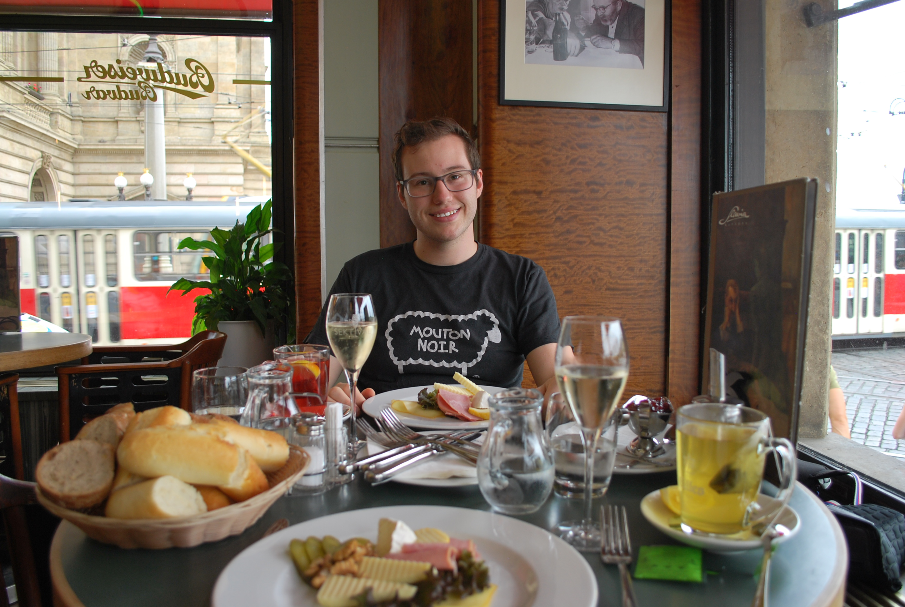
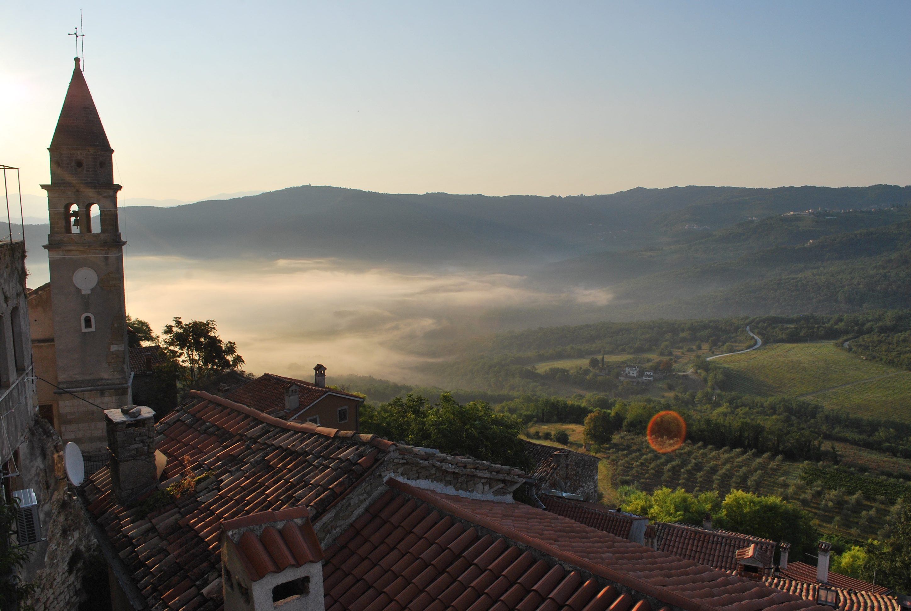
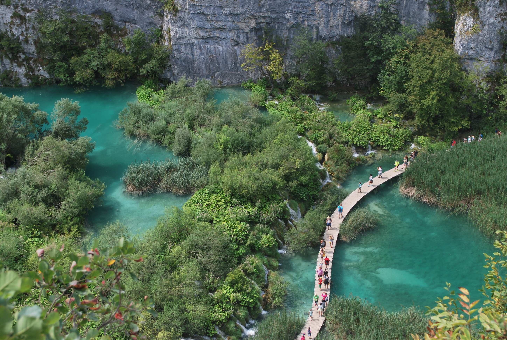
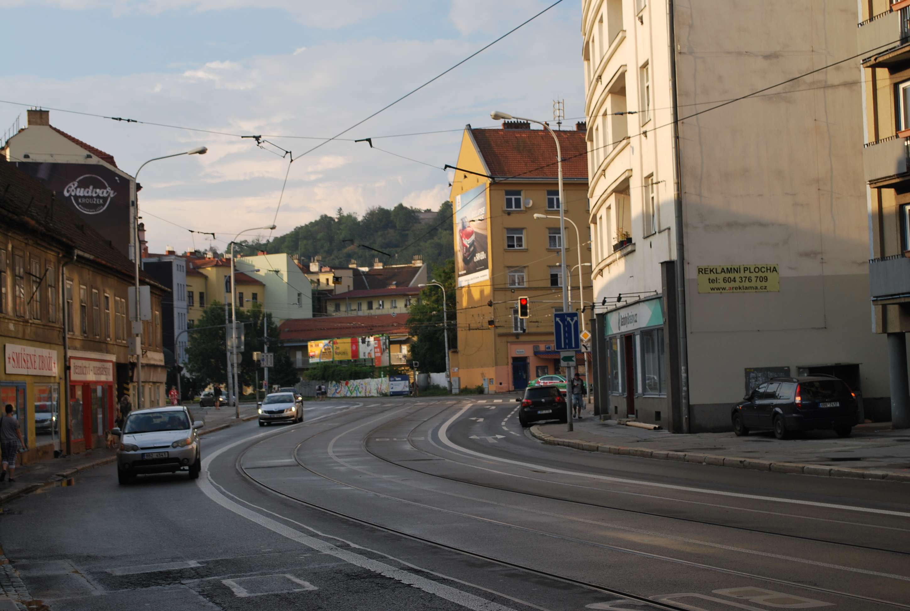
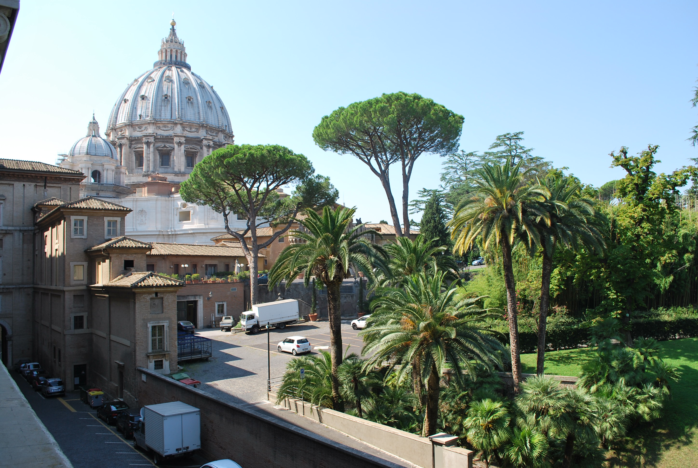
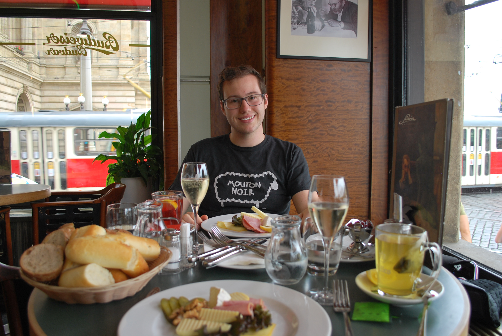
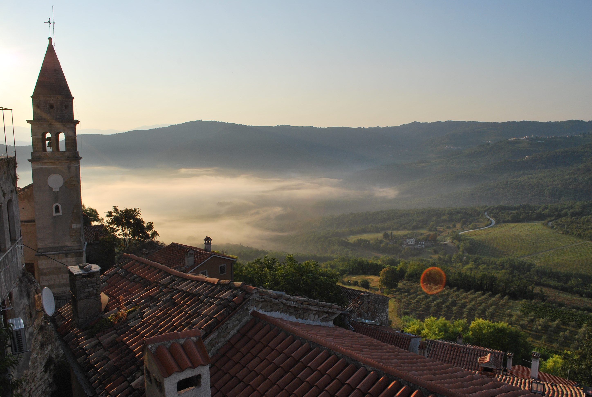
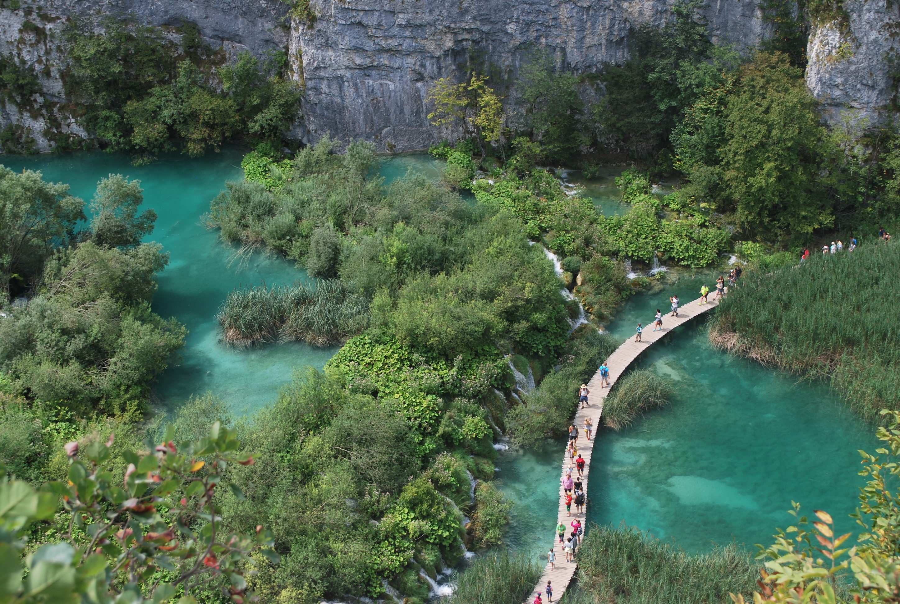
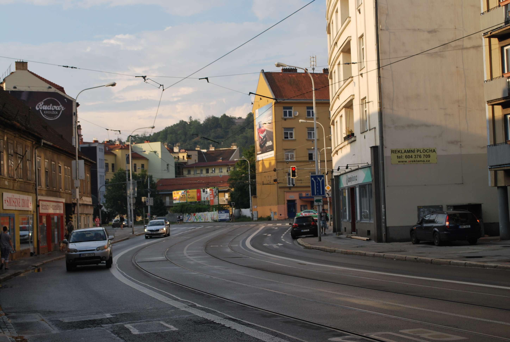

Travel
Travel is an important part of my life. I didn't travel outside of Michigan very much growing up but I've always had interest in history, culture, and geography. Gaining understanding how people live their day-to-day lives in different parts of the world is one of my favorite aspects of travel, I've learned so much just from being outside of my own environment. I've been to 12 different countries over the last four years, and I'm going to be living abroad for school this upcoming semester in the winter of 2023.


 








